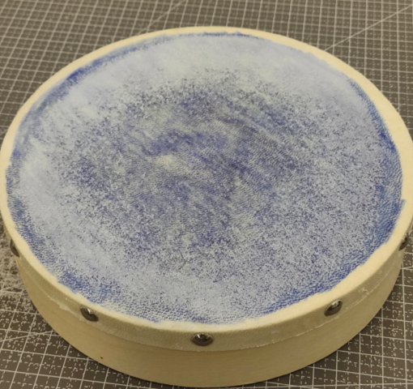

数学物理方法课程项目——圆形薄膜振动的理论分析与实验验证
项目以羊皮鼓膜为研究对象，围绕圆形张紧薄膜在不同激励条件下的模态响应展开。研究路线从“单次敲击时域瞬态分析” 迭代到“频域稳态扫频验证”，最终通过扫频 + Chladni 盐粒法成功显影三组典型模态。 核心结论包括：频率比定律验证误差低于 2.5%，模态形状与 Bessel 函数理论预测高度一致。
关键词：Bessel 函数, 分离变量法, Chladni 图样, 圆形薄膜, 频率比定律, COMSOL, MATLAB
1 理论建模与研究路线
1.1 波动方程与边界条件
将鼓膜抽象为二维圆形张紧薄膜，位移场 u(r, θ, t) 满足二维波动方程，边界采用固定边界（Dirichlet 条件） u(a, θ, t)=0。通过分离变量法得到径向 Bessel 方程，舍弃在膜心发散的第二类 Bessel 函数， 得到本征模态与本征频率解析表达式。
1.2 方法迭代：时域到频域
早期尝试在时域观测单次敲击响应，但受到多模态混叠、瞬态衰减快、位移幅值小三重限制，难以清晰识别单一模态。 因此将研究路线切换为频域稳态扫频，通过共振机制筛选目标模态，再用盐粒显影节线，实现可观测验证。

Fig. 1 圆形薄膜建模与坐标设定

Fig. 2 单次敲击瞬态响应分析
2 频率比定律与 MATLAB 模态可视化
对同一鼓膜，任意两模态频率比仅由 Bessel 零点比决定。项目选取 (0,2) 模态作为锚点， 预测 (0,1)、(1,1)、(2,1) 等模态频率，再与实验频率对照，构成核心验证判据。
| 模态 | 理论预测 | 实验观测 | 结论 |
|---|---|---|---|
| (0,2) | 525 Hz（锚点） | 525 Hz | 一致 |
| (1,1) | 约 364 Hz | 365–370 Hz | 误差 < 2% |
| (0,1) | 228.7 Hz | 约 235 Hz | 误差约 2.5% |
| (2,1) | 约 488 Hz | 未稳定显影 | 与 (0,2) 模态竞争 |

Fig. 3 MATLAB 理论节线图

Fig. 4 Chladni 盐粒法实验图样
3 实验结果与反思
- 成功显影并验证 (0,2)、(1,1)、(0,1) 三组代表模态。
- 频率比定律在实测中得到验证，主要误差来源为阻尼、激励频响与边界非理想性。
- (2,1) 模态未稳定显影，原因包括频率邻近模态竞争与轴对称激励耦合不足。
- 确认“时域瞬态 → 频域稳态”的方法迭代是项目成功关键。